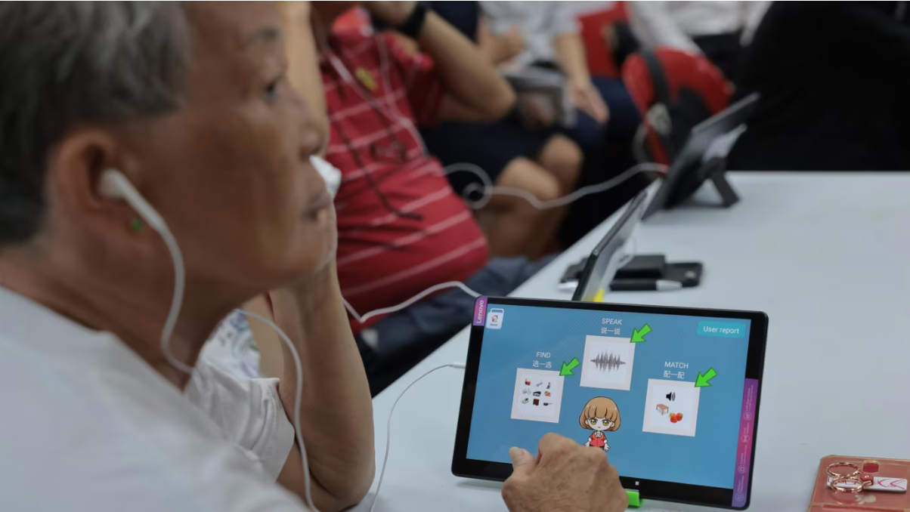
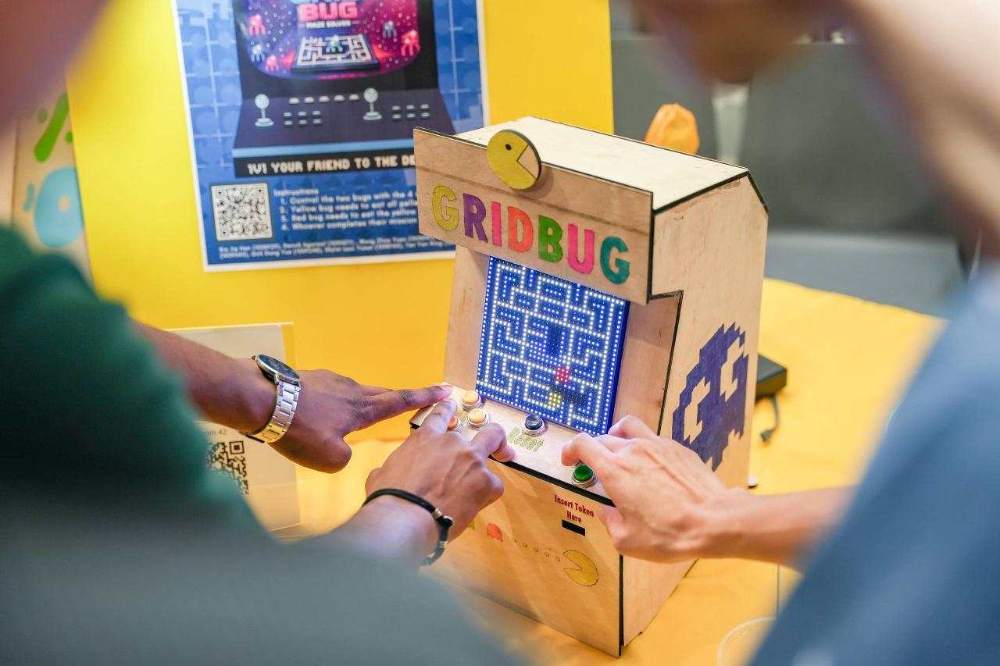
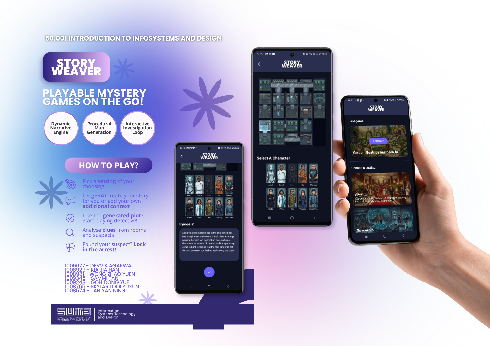

AI Product Prototyping
Designing AI-assisted learning flows, chatbot behaviour, prompt guardrails, and usability feedback loops.
- OpenAI API
- Prompt design
- Human-centred AI
Computer Science & Design Undergraduate
I’m Zhao Yuen, a SUTD Computer Science and Design student building AI-powered education tools, eldercare technology, mobile experiences, and hardware-software prototypes.
From idea to launch.
My work sits between software engineering, product thinking, and user research. I enjoy projects where the interface has to feel simple, the logic has to be reliable, and the experience has to make people more confident rather than more confused.
/What I do
Designing AI-assisted learning flows, chatbot behaviour, prompt guardrails, and usability feedback loops.
Building mobile app screens, user journeys, local data persistence, quiz flows, profiles, rewards, and history features.
Creating logic-driven prototypes with FSMs, datapaths, FPGA workflows, physical debugging, and real-time interaction.
Supporting pitches, stakeholder meetings, brand materials, pilot planning, client conversations, and startup storytelling.
 Strive
Strive
May 2026 - Present
A study companion app with AI-guided explanations, contextual quizzes, chat history, coin rewards, loot boxes, shop features, profiles, and avatar customisation.

AMI2025 - Present
Supported brand, content, pitch materials, stakeholder conversations, pilot preparation, and usability loops for AI-driven cognitive engagement tools for older adults.

GridBugFeb 2026 - Apr 2026
Built shifting and movement logic for a physical multiplayer grid game using FSM and datapath design, FPGA testing, LED matrix integration, and iterative hardware debugging.

StoryWeaverFeb 2026 - Apr 2026
Created an Android mystery prototype combining procedural 2D map generation, AI-powered story generation, and replayable investigation gameplay.
/Experience
Lead brand, poster, exhibition, and investor materials while supporting commercialisation planning, stakeholder meetings, and pilot preparation.
Teach programming and computational thinking through guided lessons, debugging support, and explanations tailored to different learning levels.
Support club operations, administration, communications, logistics, and coordination for training and student organisation activities.
Tools I use to build.
Java, Python, C, SQL, HTML, CSS, JavaScript, Node.js, Android Studio, Git/GitHub, SQLite
OpenAI API integration, prompt design, AI-assisted learning flows, local data persistence, usability feedback analysis
Figma, human-centred design, mobile UX, field research, usability testing, pitch decks, stakeholder management
/Notes
01
02
03
Let’s build something useful.
I’m interested in AI products, Android apps, education technology, eldercare technology, product management, and design-heavy software work.